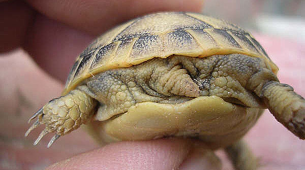
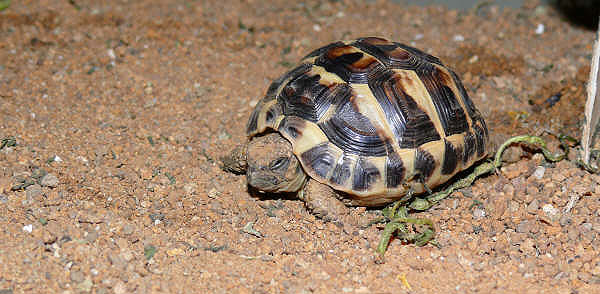

|
CASO DE HIBRIDACI�N ENTRE Testudo graeca sp. y Testudo hermanni
hermanni
Joan Illa y Marcos Mart�nez, 2007
La hibridaci�n entre distintas especies de tortugas acu�ticas est� ampliamente
documentada, especialmente en animales de origen asi�tico. Quiz�s las
particulares condiciones de hacinamiento y masificaci�n que se dan en
las granjas de cr�a dirigidas el mercado culinario de estos pa�ses, tanto en cantidad de animales
como en variedad de especies, favorecen la aparici�n de h�bridos, y no
por una determinada tendencia natural de las especies en cuesti�n. (Vetter
H., van Dijk, 2006) (torsten.schildis.net)
En el caso de las tortugas terrestres, es todo lo contrario. Las citas
bibliogr�ficas que hay al respecto, son escasas, difusas y/o poco
detalladas. Se conocen casos de hibridaci�n entre Agrionemys
horsfieldii y Testudo hermanni hermanni (Kirsche, W. 1984);
Agrionemys horsfieldii y Testudo graeca ibera (Kabisch, 2001);
Astrochelys radiata y Geochelone carbonaria (Gonz�lez, 1993);
Gopherus
agassizii y Gopherus berlandieri (Connor, 1989), (Woodbury,
1952). Otras referencias informales recogen casos de hibridaci�n de Testudo graeca ibera y
Testudo marginata (Wikipedia, 2004); (testudoalbino.com,
2005).
Es posible que la misma naturaleza de las tortugas terrestres, o el no
haberse visto forzadas a situaciones como las tortugas acu�ticas
anteriormente mencionadas, no propicien la constataci�n de muchos
casos de hibridaci�n. Hay aficionados y criadores que han observado
que en buenas condiciones de espacio, diferentes especies de tortugas
terrestres mantenidas en el mismas instalaciones, buscan a sus coespec�ficos
para el apareamiento (Pursall, 2002).
La hibridaci�n entre Testudo graeca sp. y Testudo hermanni
sp. es, como
poco, curiosa; ya que a pesar de estar las dos especies incluidas
tradicionalmente en el mismo g�nero, ambas son gen�tica y
evolutivamente bastante distantes (Fritz et al., 2007), (van der Kuyl
et al., 2002) (J.F. Parham et al., 2006). Tanto, que
Testudo hermanni fue propuesta para formar parte del g�nero Agrionemys
y recientemente lo ha sido tambi�n, pero en este caso formando un
nuevo g�nero independiente (Eurotestudo) (de Lapparent de Broin
F. et al., 2006). Sin embargo, y dejando cuestiones taxon�micas a un
lado, esto no parece ser un factor tan determinante como pueda parecer
a priori, como lo demuestran las m�ltiples hibridaciones de tortugas acu�ticas asi�ticas
clasificadas en distintos g�neros o el caso de hibridaci�n
entre Geochelone carbonaria y Astrochelys radiata.
En la literatura popular para aficionados a las tortugas no hemos
encontrado
referencias a ning�n caso como �ste, por lo que hemos considerado
interesante contar esta peque�a historia. S� hay algunas menciones
en foros de aficionados en internet (tortues-terrestres.forumactif.com)
Entrando de lleno en los hechos que acontecieron habr�a que
puntualizar que no hay lugar a error o confusi�n para
aseverar que se trata de un caso de hibridaci�n. La hembra ha sido
mantenida por su due�o 9 a�os, desde juvenil (3 a�os
aproximadamente) hasta adulta; tiempo en el que jam�s ha estado
en contacto con un macho de su especie.
Im�genes de la hembra de testudo graeca sp.
Foto del macho de Testudo hermanni
hermanni.
El apareamiento se debi� producir en la primavera del 2006 u oto�o del
2005, y no se hab�a visto en el macho ning�n tipo de atenci�n hacia la
hembra. �sta deposit� 4 puestas a finales de primavera, de entre 5-7
huevos, haciendo un total de 24. Nacieron 5 tortugas, 2 huevos
presentaron embriones muertos a medio formar y el resto eran hueros.
De las 5 cr�as que nacieron, 4 fueron
enviadas al Centro de l'Albera en Garriguella (Gerona) y murieron al poco tiempo;
la otra
tambi�n fue donada al mismo centro un a�o despu�s. A�n sobrevive. Todas presentaron al nacer
distintos tipos de malformaciones graves, excepto la superviviente, en
la que son m�s leves.
A continuaci�n o presentamos una serie
de fotos ilustrando algunas de las caracter�sticas m�s curiosas y
destacadas de los ejemplares nacidos.
Las dos primeras cr�as a los pocos d�as
de nacer.
Malformaciones graves en la mand�bula y
narinas, y
ojos casi o totalmente cerrados.
Todos los animales presentan una mancha
amarilla en la mejilla, rasgo t�pico en Testudo hermanni hermanni
y tambi�n habitual en la variable morfolog�a de Testugo graeca sp.
4 de los ejemplares no mostraban apenas
ning�n patr�n de color negro en el plastr�n. Fen�meno casi imposible
de encontrar en Testudo hermanni hermanni y no demasiado com�n en Testudo
graeca sp.

Algunos ejemplares mostraban espolones en los muslos m�s claramente
que otros. Es una caracter�stica de Testudo graeca.
U�a en la cola. Un rasgo t�pico de
Testudo hermanni hermanni que no termina de definirse en estos
ejemplares a pesar de estar presente.
Escudo supracaudal dividido. Presente casi en el 100% de los
ejemplares de Testudo hermanni hermanni y menos habitual en
Testudo graeca sp. En la segunda foto est� menos definido.
Ejemplar cuyo caparaz�n guarda cierta reminiscencia con el patr�n
t�pico de Testudo graeca.
Otra de las cr�as, mucho m�s parecida a
Testudo hermanni hermanni en
su aspecto externo.
El mismo ejemplar, junto una de sus hermanas con un patr�n "m�s
cercano" a Testudo hermanni hermanni. N�tese la presencia, en
ambos casos, de la macha romboide encima de la cabeza, muy habitual en
Testudo graeca; especialmente en animales j�venes.

Im�genes del �nico superviviente del grupo, tras pasar el invierno en
un terrario. Era el �nico con ojos viables.
Algunas fotos m�s del mismo ejemplar, justo un a�o despu�s de su
nacimiento. Como se puede observar fue el �nico con manchas oscuras
bien definidas en el plastr�n. Actualmente se encuentra en Centro de l'Albera en Garriguella (Gerona), donde a�n puede ser vista.
Fotos: Joan Illa
BIBLIOGRAF�A
Connor, M. (1989).
Molecular Biology and the Turtle: The desert tortoise and its
relatives. Tortuga Gazette 25(8): 10-11, August 1989.
De Lapparent de Broin F. et al. (2006).
Eurotestudo, a new genus for the species Testudo hermanni Gmelin, 1789
(Chelonii, Testudinidae). C. R. Palevol
Fritz U., Hundsd�rfer A. K., �irok� P. ,
Auer1 M., Kami3 H., Lehmann J., Mazanaeva L.F., T�rkozan O., Wink M.,
(2007).
Phenotypic plasticity leads to incongruence between morphology-based
taxonomy and genetic differentiation in western Palaearctic tortoises
(Testudo graeca complex; Testudines, Testudinidae).
Amphibia-Reptilia 28 : 97-121.
Gonzalez, J. (1993) R�union Island -
Still a land of tortoises. Chelonian Conservation and Biology
1(1):51-52.
Kabisch, K. (2001): Bastardisierung von
Testudo horsfieldii GRAY, 1844 und
Testudo graeca ibera PALLAS, 1814. � Sauria, Berlin, 23(2): 7-11.
Kirsche, W. (1984): Bastardierung von
Testudo horsfieldii (GRAY) und Testudo h.
hermanni GMELIN. �Amphibia-Reptilia, Bonn, 5: 311-322.
Parham J.F., Macey J.R., Papenfuss T.J.,
Feldman C.R., T�rkozan O., Polymeni R., Boore J. (2006)
The phylogeny of Mediterranean tortoises and their close relatives
based on complete mitochondrial genome sequences from museum specimens.
Molecular Phylogenetics and Evolution 38 (2006) 50�64.
Pursall, B. (2002). Tortugas Terrestres
Mediterr�neas: 36-37. Editorial Hispano Europea, Barcelona.
Testudoalbino.com (2005).
torsten.schildis.net
tortues-terrestres.forumactif.com
Van der Kuyl A.C., Ballasina D. L. Ph.,
Dekker J. T., Maas J., Willemsen R. E., Goudsmit J., (2002)
Phylogenetic Relationships among the Species of the Genus Testudo (Testudines:
Testudinidae) Inferred from Mitochondrial 12S rRNA Gene Sequences.
Vol. 22, No. 2, February, pp. 174�183, 2002
Vetter H., van Dijk P.P. (2006).
Turtles of the world Vol4. East and South Asia. 148-160.
Edition Chimaira.
Woodbury, Angus M. 1952. Hybrids of
Gopherus berlandieri and G. agassizii. Herpetologica 8: 33-36.
Wikipedia.org (2004):
Hybrid Testudo graeca ibera/Testudo marginata.
|